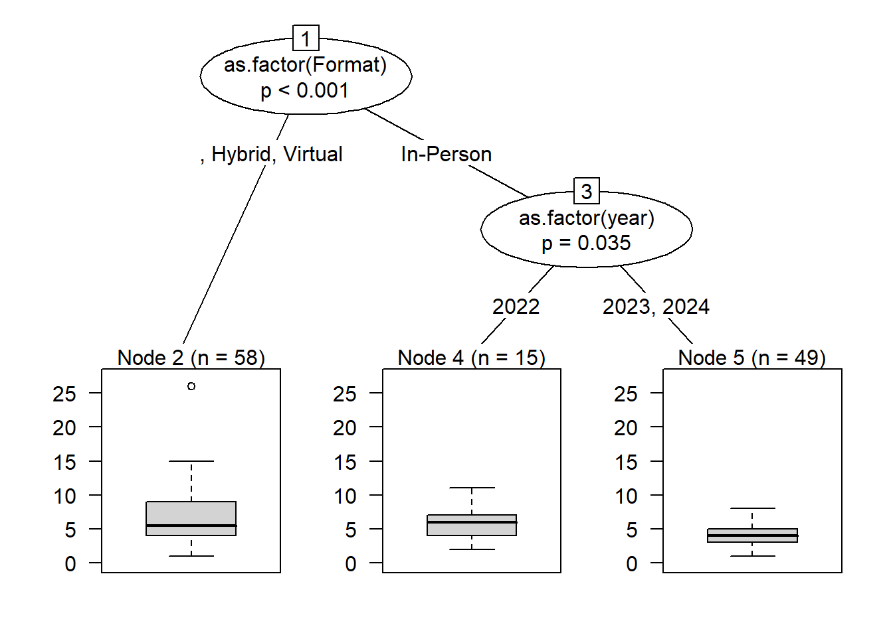

Model formula:
Total.Attendees ~ as.factor(Format) + as.factor(year) + as.factor(WorkshopCode) +
as.factor(Is.this.visit.part.of.a.series.) + as.factor(Semester)
Fitted party:
[1] root
| [2] as.factor(WorkshopCode) in BBASH, BLATEX, COMP101, DCR, DMPTOOLS, GGPLOT2, IBASH, INTROR, LUL, MATLAB, MRD101, OMEKA, OSF1HOUR, PRESENT, RREP, SMOOTH, STORY, TRBL101, VIZ101
| | [3] as.factor(Format) in , Hybrid, Virtual: 5.857 (n = 28, err = 231.4)
| | [4] as.factor(Format) in In-Person: 4.427 (n = 82, err = 270.1)
| [5] as.factor(WorkshopCode) in INTROPY, NEWSAA, TIDY101, ZOTERO: 15.222 (n = 9, err = 525.6)
Number of inner nodes: 2
Number of terminal nodes: 3
[1] "Workshops from 2023 to 2025 (last two calendar years)"